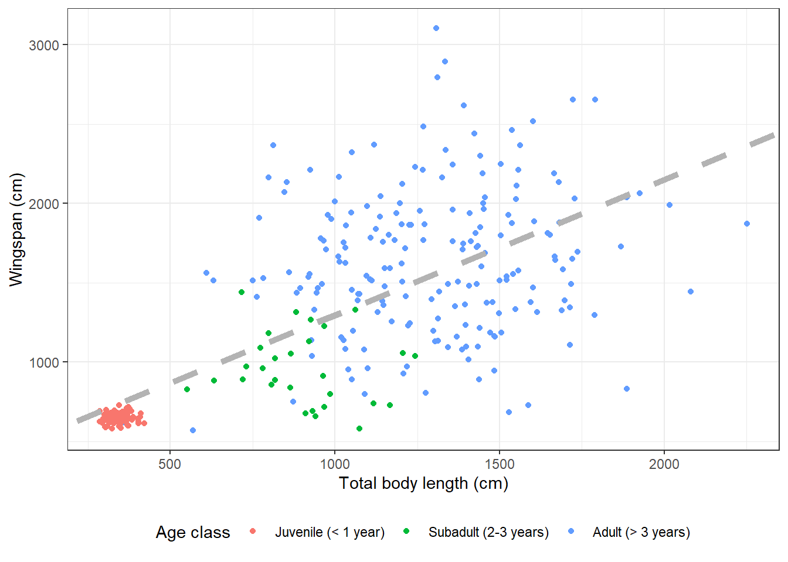

Chapter 14 Data Visualization with ggplot2
Data visualization and storytelling is one of the most important parts of the
scientific process, and arguably the most fun. In this Chapter, we are going to
see how to make beautiful, elegant plots using the core tidyverse package
ggplot2.

Figure 14.1: Artwork by Allison Horst
We are going to practice using the dragon dataset again, so let’s load it in:
library(DBI)
dragons_db <- dbConnect(RSQLite::SQLite(), "../../Course Material/Data/dragons/dragons.db")
dragons <- dbGetQuery(dragons_db, "SELECT * FROM dragons;")
capture_sites <- dbGetQuery(dragons_db, "SELECT * FROM capture_sites;")
captures <- dbGetQuery(dragons_db, "SELECT * FROM captures;")
morphometrics <- dbGetQuery(dragons_db, "SELECT * FROM morphometrics;")
diet <- dbGetQuery(dragons_db, "SELECT * FROM diet;")
tags <- dbGetQuery(dragons_db, "SELECT * FROM tags;")
deployments <- dbGetQuery(dragons_db, "SELECT * FROM deployments;")
telemetry <- dbGetQuery(dragons_db, "SELECT * FROM gps_data;")14.1 A Grammar of Graphics
What makes data visualization in ggplot2 different from data visualization
using base R functions? Instead of having to manually combine raw elements like
points and lines to produce the figure you want, ggplot2 allows you to use a
more structured approach so that a handful of commands will produce the plot you
have in mind with minimal hassle.
The logic of ggplot follows the “Grammar of Graphics” framework, which was
first introduced in a book by Leland Wilkinson. This framework
concisely describes the different components of a graphic. At a minimum, a plot
is composed by data, aesthetics, and geometries:
- Data: this is the data you want to represent in your plot;
- Aesthetics: these are the variables that are represented on the plot (e.g., what goes on the axes, or what is encoded with different symbols and colors);
- Geometries: these are the actual symbols that appear on the plot (points, lines, etc.)
On top of these fundamental components, there can be additional elements for customization.
Another major difference between ggplot2 and plots in base R is that ggplot2
works like a declarative language. Declarative means that the code to make the
plot is evaluated and interpreted all at once, not one line at a time like in
base R, which by contrast is an imperative language. We are used to paying
close attention to the order in which we run code in R, because if we run
commands in the wrong order things won’t work, but as we’ll see the order in
which we specify features of our plot is not as rigid in ggplot2.
14.2 Building plots
ggplot works in layers. Each layer specifies one or more components of the
plot, and layers can be added to progressively customize the final result. At a
minimum, a plot has to contain layers for the three fundamental
components that we’ve seen above: data, aesthetics, and geometries. Everything
else is optional. Layers are added using a + sign.
14.2.1 Basic scatterplot
Let’s say that we want to explore the correlation between total body length and
wingspan in dragons. We may want to look at that using a scatterplot. This is
how to build one in ggplot2:
ggplot(data = morphometrics,
mapping = aes(x = total_body_length_cm, y = wingspan_cm)) +
geom_point()Let’s break down the syntax of what I just wrote. First, we start with the
function ggplot. This function takes as input 1. the data that we want to plot
and 2. the aesthetics for the plot. At a minimum, these include the variables
that we want to plot on the two axes. Here, I specified that I want to plot the
data frame called morphometrics and that I want to plot total body length on
the x axis and wingspan on the y axis. Then there’s a + sign, which means that
we’re adding a layer. The next layer describes the geometry we want to plot. A
scatterplot is made of points, so the function to use is geom_point. So
essentially you could read that whole code as, “make a scatterplot with the
morphometrics table where total body length is on the x axis and wingspan is on
the y axis.”
Note that, if you look at the help file for geom_point or any other geom_
function, you’ll see that the first two arguments are mapping and data.
These are the same as the ones we specified in ggplot. What’s up with that?
The data and mapping options that we specify in ggplot are global plot
settings that will be implicitly assumed for every layer downstream. If we don’t
specify anything for these two arguments in the geom_ function, the geometries
will inherit the global plot settings. But it’s possible to override the global
plot settings by specifying different ones in a certain layer, for example if
we want to overlay two different datasets.
14.2.2 Basic histogram
What if we wanted to look at the distribution of total body length instead? We may want to use a histogram for that:
## `stat_bin()` using `bins = 30`. Pick better value with `binwidth`.In this case we only have one aesthetic, because the y axis on a histogram is
the bin frequency (by default, ggplot2 shows the absolute frequency). We can
choose other options within geom_histogram, such as changing the number of
bins:
14.2.3 Basic density plot
Perhaps a better way to visualize the distribution of a variable is to use a density plot rather than a histogram.
14.2.4 Other geom functions
The ones above are just four common examples of functions in the geom family,
but there are many others that you may find yourself using (and we’ll see some
of these in action throughout the rest of this Chapter and in class):
geom_linefor lines connecting observations based on their value (useful for time series plots and regression lines);geom_pathfor lines connecting observations based on the order they appear in (useful for movement data);geom_ribbonfor shaded envelopes around lines (useful for representing confidence intervals);geom_hlineandgeom_vline, for horizontal and vertical intercepts, respectively;geom_boxplotandgeom_violinfor distributions of continuous variables;geom_pointrangefor point estimates with uncertainty ranges;- and many many more…
14.3 Customizing plots
Now that we got the gist of how to build a basic plot in ggplot2, let’s start
to learn how to make them pretty.
14.3.1 Changing axis labels
Let’s go back to our scatterplot and fix some details. First, let’s change the axis labels. There are several ways to do this; one of them is this:
ggplot(data = morphometrics,
mapping = aes(x = total_body_length_cm, y = wingspan_cm)) +
geom_point() +
labs(x = "Total body length (cm)", y = "Wingspan (cm)")An alternative way is:
ggplot(data = morphometrics,
mapping = aes(x = total_body_length_cm, y = wingspan_cm)) +
geom_point() +
xlab("Total body length (cm)") +
ylab("Wingspan (cm)")
14.3.2 Changing colors
See that cluster of points in the bottom-left of the scatterplot? It seems like there’s a lot less variation in terms of body measurements in that cluster compared to the larger cloud on the right. Could that be because of an age effect? Perhaps young dragons are more consistent in their measurements, and as they reach adulthood their body size varies much more between individuals. Let’s try to get a clue to verify this hypothesis by coloring the dots on the scatterplot based on age. We are going to use some of the tools we learned in Chapter 13 to associate age information from the dragons table to the morphometrics table:
morphometrics %>%
left_join(dragons, by = "dragon_id") %>%
# note that I am feeding the results of the pipe directly into ggplot:
# whatever comes out of that pipe is used as the data argument for the plot
ggplot(mapping = aes(x = total_body_length_cm, y = wingspan_cm, color = age_class)) +
geom_point() +
labs(x = "Total body length (cm)", y = "Wingspan (cm)")14.3.3 Modifying legends
Looks like our hypothesis was correct: that cluster of points includes measurements for juvenile dragons. Let’s make that legend a little prettier:
morphometrics %>%
left_join(dragons, by = "dragon_id") %>%
ggplot(mapping = aes(x = total_body_length_cm, y = wingspan_cm, color = age_class)) +
geom_point() +
labs(x = "Total body length (cm)", y = "Wingspan (cm)", color = "Age class")Besides changing the title of the legend, we can also change the labels on each of the categories that appear in it. For example, if we wanted to add age ranges to correspond to each age class:
morphometrics %>%
left_join(dragons, by = "dragon_id") %>%
ggplot(mapping = aes(x = total_body_length_cm, y = wingspan_cm, color = age_class)) +
geom_point() +
labs(x = "Total body length (cm)", y = "Wingspan (cm)", color = "Age class") +
scale_color_discrete(labels = c("Adult (> 3 years)",
"Juvenile (< 1 year)",
"Subadult (2-3 years)"))What if we want to reorder legend items so that they appear in order of age?
That is not something that we can do within the plot itself, it’s a change that
needs to be done in the data before we plot. We need to change the order of the
levels in the factor age_class. Once that’s done, we need to remember to also
change the order of the labels to reflect the new order:
morphometrics %>%
left_join(dragons, by = "dragon_id") %>%
mutate(age_class = factor(age_class, levels = c("Juvenile",
"Subadult",
"Adult"))) %>%
ggplot(mapping = aes(x = total_body_length_cm, y = wingspan_cm, color = age_class)) +
geom_point() +
labs(x = "Total body length (cm)", y = "Wingspan (cm)", color = "Age class") +
scale_color_discrete(labels = c("Juvenile (< 1 year)",
"Subadult (2-3 years)",
"Adult (> 3 years)")) We can also change the position of the legend:
morphometrics %>%
left_join(dragons, by = "dragon_id") %>%
mutate(age_class = factor(age_class, levels = c("Juvenile",
"Subadult",
"Adult"))) %>%
ggplot(mapping = aes(x = total_body_length_cm, y = wingspan_cm, color = age_class)) +
geom_point() +
labs(x = "Total body length (cm)", y = "Wingspan (cm)", color = "Age class") +
scale_color_discrete(labels = c("Juvenile (< 1 year)",
"Subadult (2-3 years)",
"Adult (> 3 years)")) +
theme(legend.position = "bottom")14.3.4 Themes
The theme function that we just used to move the legend to the bottom can do
so much more than just that! It has arguments that allow you to customize the
appearance of your plot in pretty much any way you want. Things like the plot
title and subtitle, the labels that appear on the axes (and you can have two
y axis, one on the right and one on the left, or two x axis, one on the top and
one on the bottom), the numbers or words that appear on axis ticks as well as
their size and orientation, the length of the ticks themselves, legend size,
spacing, alignment, the look of the background of the plot…
You can create your own theme by saving it as an object and then adding it to a plot as a new layer:
# This theme adds a gray box around the legend and
# alternates the size of the lines in the background grid
my_theme <- theme(legend.background = element_rect(fill = "gray90",
size = 0.5,
linetype = "solid",
color = "black"),
panel.grid.major = element_line(color = "white",
size = 1.5))
morphometrics %>%
left_join(dragons, by = "dragon_id") %>%
mutate(age_class = factor(age_class, levels = c("Juvenile",
"Subadult",
"Adult"))) %>%
ggplot(mapping = aes(x = total_body_length_cm, y = wingspan_cm, color = age_class)) +
geom_point() +
labs(x = "Total body length (cm)", y = "Wingspan (cm)", color = "Age class") +
scale_color_discrete(labels = c("Juvenile (< 1 year)",
"Subadult (2-3 years)",
"Adult (> 3 years)")) +
theme(legend.position = "bottom") +
my_themeUgly. I know.
If you’re not a graphic designer and your plots look as ugly as mine when you
manipulate the theme yourself, ggplot2 also offers a variety of pre-set themes.
For example, here is the “minimal” theme:
morphometrics %>%
left_join(dragons, by = "dragon_id") %>%
mutate(age_class = factor(age_class, levels = c("Juvenile",
"Subadult",
"Adult"))) %>%
ggplot(mapping = aes(x = total_body_length_cm, y = wingspan_cm, color = age_class)) +
geom_point() +
labs(x = "Total body length (cm)", y = "Wingspan (cm)", color = "Age class") +
scale_color_discrete(labels = c("Juvenile (< 1 year)",
"Subadult (2-3 years)",
"Adult (> 3 years)")) +
theme_minimal() +
theme(legend.position = "bottom") Here is the “black and white” theme:
morphometrics %>%
left_join(dragons, by = "dragon_id") %>%
mutate(age_class = factor(age_class, levels = c("Juvenile",
"Subadult",
"Adult"))) %>%
ggplot(mapping = aes(x = total_body_length_cm, y = wingspan_cm, color = age_class)) +
geom_point() +
labs(x = "Total body length (cm)", y = "Wingspan (cm)", color = "Age class") +
scale_color_discrete(labels = c("Juvenile (< 1 year)",
"Subadult (2-3 years)",
"Adult (> 3 years)")) +
theme_bw() +
theme(legend.position = "bottom") Here is the “void” theme:
morphometrics %>%
left_join(dragons, by = "dragon_id") %>%
mutate(age_class = factor(age_class, levels = c("Juvenile",
"Subadult",
"Adult"))) %>%
ggplot(mapping = aes(x = total_body_length_cm, y = wingspan_cm, color = age_class)) +
geom_point() +
labs(x = "Total body length (cm)", y = "Wingspan (cm)", color = "Age class") +
scale_color_discrete(labels = c("Juvenile (< 1 year)",
"Subadult (2-3 years)",
"Adult (> 3 years)")) +
theme_void() +
theme(legend.position = "bottom") If you use a pre-set theme, make sure you add that layer before you add any
other tweaks using theme, because if you add theme first, the pre-set theme
will override whatever settings you specified in theme. For instance, if I put
theme_void at the end in the previous example, the legend does not get moved
to the bottom:
morphometrics %>%
left_join(dragons, by = "dragon_id") %>%
mutate(age_class = factor(age_class, levels = c("Juvenile",
"Subadult",
"Adult"))) %>%
ggplot(mapping = aes(x = total_body_length_cm, y = wingspan_cm, color = age_class)) +
geom_point() +
labs(x = "Total body length (cm)", y = "Wingspan (cm)", color = "Age class") +
scale_color_discrete(labels = c("Juvenile (< 1 year)",
"Subadult (2-3 years)",
"Adult (> 3 years)")) +
theme(legend.position = "bottom") +
theme_void() 14.3.5 Adding transparency
We could decide that we want to make the points transparent on this plot so
that we can actually get a better feel for the amount of data points within
very clumpy clusters. We can do that by adding the argument alpha in our
geometry layer:
morphometrics %>%
left_join(dragons, by = "dragon_id") %>%
mutate(age_class = factor(age_class, levels = c("Juvenile",
"Subadult",
"Adult"))) %>%
ggplot(mapping = aes(x = total_body_length_cm, y = wingspan_cm, color = age_class)) +
geom_point(alpha = 0.2) +
labs(x = "Total body length (cm)", y = "Wingspan (cm)", color = "Age class") +
scale_color_discrete(labels = c("Juvenile (< 1 year)",
"Subadult (2-3 years)",
"Adult (> 3 years)")) +
theme_bw() +
theme(legend.position = "bottom") 14.3.6 Overlaying plots with different aesthetics
From the plot we made, it seems clear that there is a correlation between the total body length of a dragon and its wingspan. We could actually model that correlation using linear regression. And then we may want to overlay the regression line to the raw data on our existing plot. Let’s see how to do just that:
# Fit linear regression
(reg <- lm(formula = wingspan_cm ~ total_body_length_cm,
data = morphometrics))##
## Call:
## lm(formula = wingspan_cm ~ total_body_length_cm, data = morphometrics)
##
## Coefficients:
## (Intercept) total_body_length_cm
## 445.2124 0.8525# Let's grab the value of the intercept and slope
coefs <- reg$coefficients
# Now we can plot
morphometrics %>%
left_join(dragons, by = "dragon_id") %>%
mutate(age_class = factor(age_class, levels = c("Juvenile",
"Subadult",
"Adult"))) %>%
ggplot(mapping = aes(x = total_body_length_cm, y = wingspan_cm, color = age_class)) +
geom_point() +
geom_abline(aes(slope = coefs[2], intercept = coefs[1])) +
labs(x = "Total body length (cm)", y = "Wingspan (cm)", color = "Age class") +
scale_color_discrete(labels = c("Juvenile (< 1 year)",
"Subadult (2-3 years)",
"Adult (> 3 years)")) +
theme_bw() +
theme(legend.position = "bottom") I added a new layer to the plot with geom_abline. Instead of the global
aesthetics (the ones I specify at the beginning in ggplot), I need to provide
a slope and an intercept. This is what I meant when I said that sometimes a
certain geometry layer can use different aesthetics than the global ones.
By specifying different aesthetics in that geometry layer, the global aesthetics
get overridden for that layer only.
14.3.7 Modifying symbol appearance
We can now play around with size, color, and line type of our regression line:
morphometrics %>%
left_join(dragons, by = "dragon_id") %>%
mutate(age_class = factor(age_class, levels = c("Juvenile",
"Subadult",
"Adult"))) %>%
ggplot(mapping = aes(x = total_body_length_cm, y = wingspan_cm, color = age_class)) +
geom_point() +
geom_abline(aes(slope = coefs[2], intercept = coefs[1]),
size = 2,
color = "gray70",
linetype = "dashed") +
labs(x = "Total body length (cm)", y = "Wingspan (cm)", color = "Age class") +
scale_color_discrete(labels = c("Juvenile (< 1 year)",
"Subadult (2-3 years)",
"Adult (> 3 years)")) +
theme_bw() +
theme(legend.position = "bottom") 
We can also change the symbols for the point data:
morphometrics %>%
left_join(dragons, by = "dragon_id") %>%
mutate(age_class = factor(age_class, levels = c("Juvenile",
"Subadult",
"Adult"))) %>%
ggplot(mapping = aes(x = total_body_length_cm, y = wingspan_cm, color = age_class)) +
geom_point(size = 2, shape = 8) +
geom_abline(aes(slope = coefs[2], intercept = coefs[1]),
size = 2,
color = "gray70",
linetype = "dashed") +
labs(x = "Total body length (cm)", y = "Wingspan (cm)", color = "Age class") +
scale_color_discrete(labels = c("Juvenile (< 1 year)",
"Subadult (2-3 years)",
"Adult (> 3 years)")) +
theme_bw() +
theme(legend.position = "bottom") 14.3.8 Fill vs. color
Shapes that are one-dimensional (points and lines) are colored using the
argument color in ggplot2. Shapes that are two-dimensional (polygons,
bars in a barplot, ecc.) are colored inside using the argument fill, and
around the border with color. Let’s make an example with some boxplots, which
are two-dimensional. This is what happens if we use color instead of fill:
morphometrics %>%
left_join(dragons, by = "dragon_id") %>%
mutate(age_class = factor(age_class, levels = c("Juvenile",
"Subadult",
"Adult"))) %>%
ggplot(mapping = aes(y = wingspan_cm, color = age_class)) +
geom_boxplot() +
labs(x = " ", y = "Wingspan (cm)", color = "Age class") +
scale_color_discrete(labels = c("Juvenile (< 1 year)",
"Subadult (2-3 years)",
"Adult (> 3 years)")) +
theme_minimal() +
theme(legend.position = "bottom") If we use fill, the border of the boxplots will be black and the inside will
be colored (note that we need to change it in three places: the global
aesthetics, the legend title in labs, and the name of the function to add
legend labels becomes scale_fill_discrete):
morphometrics %>%
left_join(dragons, by = "dragon_id") %>%
mutate(age_class = factor(age_class, levels = c("Juvenile",
"Subadult",
"Adult"))) %>%
ggplot(mapping = aes(y = wingspan_cm, fill = age_class)) +
geom_boxplot() +
labs(x = " ", y = "Wingspan (cm)", fill = "Age class") +
scale_fill_discrete(labels = c("Juvenile (< 1 year)",
"Subadult (2-3 years)",
"Adult (> 3 years)")) +
theme_minimal() +
theme(legend.position = "bottom") 14.3.9 Modifying axis values
The values on the x axis don’t mean anything in this case because this is a
boxplot. Let’s get rid of them in theme:
morphometrics %>%
left_join(dragons, by = "dragon_id") %>%
mutate(age_class = factor(age_class, levels = c("Juvenile",
"Subadult",
"Adult"))) %>%
ggplot(mapping = aes(y = wingspan_cm, fill = age_class)) +
geom_boxplot() +
labs(x = " ", y = "Wingspan (cm)", fill = "Age class") +
scale_fill_discrete(labels = c("Juvenile (< 1 year)",
"Subadult (2-3 years)",
"Adult (> 3 years)")) +
theme_minimal() +
theme(legend.position = "bottom",
axis.text.x = element_blank()) 14.3.10 Adding an extra dimension with facets
Dragon size might also depend on species. What if we wanted to look at the correlation between wingspan and total body length broken down by species as well as age class? That means we need to add another dimension to our scatterplot which is already showing 3: the x axis, the y axis, and the different colors. Facets expand the amount of information we can convey in a plot. Let’s see how they work:
morphometrics %>%
left_join(dragons, by = "dragon_id") %>%
mutate(age_class = factor(age_class, levels = c("Juvenile",
"Subadult",
"Adult"))) %>%
ggplot(mapping = aes(x = total_body_length_cm, y = wingspan_cm, color = age_class)) +
geom_point() +
facet_wrap(~ species) +
labs(x = "Total body length (cm)", y = "Wingspan (cm)", color = "Age class") +
scale_color_discrete(labels = c("Juvenile (< 1 year)",
"Subadult (2-3 years)",
"Adult (> 3 years)")) +
theme_bw() +
theme(legend.position = "bottom") The function I used to break down the plot into facets is facet_wrap. This
function takes as input a one-sided formula: ~ variable/s. What goes on the
right hand side of the formula is the categorical variable based on which we
want to break down the plot. These can also be multiple categorical variables,
in which case there will be as many facets as the possible level combinations.
The labels that appear on the facets are verbatim the factor levels that appear in the data frame. If we weren’t happy with them (say, they are too long, or they are all lowercase and we want title case) we could change them. Let’s try to replace the full species names with just the initials. We need to define a labeller, which is a vector associating each label the way it appears in the current plot with the label that we want instead:
species_labels <- c("Hebridean Black" = "HB",
"Romanian Longhorn" = "RL",
"Peruvian Vipertooth" = "PV",
"Ukrainian Ironbelly" = "UI",
"Norwegian Ridgeback" = "NR",
"Common Welsh Green" = "CWG",
"Swedish Short-Snout" = "SSS",
"Chinese Fireball" = "CF",
"Hungarian Horntail" = "HH",
"Antipodean Opaleye" = "AO")
morphometrics %>%
left_join(dragons, by = "dragon_id") %>%
mutate(age_class = factor(age_class, levels = c("Juvenile",
"Subadult",
"Adult"))) %>%
ggplot(mapping = aes(x = total_body_length_cm, y = wingspan_cm, color = age_class)) +
geom_point() +
facet_wrap(~ species, labeller = labeller(species_labels,
species = species_labels)) +
labs(x = "Total body length (cm)", y = "Wingspan (cm)", color = "Age class") +
scale_color_discrete(labels = c("Juvenile (< 1 year)",
"Subadult (2-3 years)",
"Adult (> 3 years)")) +
theme_bw() +
theme(legend.position = "bottom") 14.3.11 Error bars
Let’s look at the content of some dragon diet samples, for a change. What do dragons like to eat most?
Looks like they really like to eat domestic goats, huh? Let’s look at that in terms of relative frequency rather than count:
ggplot(diet, aes(x = item)) +
geom_bar(aes(y = ..prop.., group = 1), fill = "orange") +
labs(x = " ", y = "Relative frequency") +
theme_bw()Do different species like to eat different things?
diet %>%
left_join(dragons, by = "dragon_id") %>%
ggplot(aes(x = item)) +
geom_bar(aes(y = ..prop.., group = 1), fill = "orange") +
facet_wrap(~ species) +
labs(x = " ", y = "Relative frequency") +
theme_bw()For each diet item, we can summarize the mean relative frequency in diet samples
across species, calculate a standard deviation, and plot it as an error bar.
Because we are plotting values that we calculate manually instead of using
geom_bar to count and plot, we need to use geom_col instead:
# This is the count by item for each species
item_count <- diet %>%
left_join(dragons, by = "dragon_id") %>%
group_by(species, item) %>%
tally()
# This is the total number of items per species
tot_items <- diet %>%
left_join(dragons, by = "dragon_id") %>%
group_by(species) %>%
tally()
# Divide to get relative frequency
item_count <- item_count %>%
left_join(tot_items, by = "species") %>%
mutate(rel_freq = n.x/n.y)
# Calculate mean and sd for each item across species
rf <- item_count %>%
group_by(item) %>%
summarize(mean_rf = mean(rel_freq), sd_rf = sd(rel_freq))## `summarise()` ungrouping output (override with `.groups` argument)ggplot(rf, aes(x = item, y = mean_rf)) +
geom_col(fill = "orange") +
geom_errorbar(aes(ymin = mean_rf - sd_rf,
ymax = mean_rf + sd_rf),
width = 0.3) +
labs(x = " ", y = "Relative frequency") +
theme_bw()We can also change the color to match the bars so that only the top part of the error bar is visible:
ggplot(rf, aes(x = item, y = mean_rf)) +
geom_col(fill = "orange") +
geom_errorbar(aes(ymin = mean_rf - sd_rf,
ymax = mean_rf + sd_rf),
width = 0.3,
color = "orange") +
labs(x = " ", y = "Relative frequency") +
theme_bw()We can also represent these as points with error bars:
14.3.12 Plot model predictions with uncertainty
Oftentimes you’ll find yourself wanting to make a plot with predictions from
some kind of linear model, showing the confidence intervals around the mean
estimate. This can be done by combining the geom_line function with geom_ribbon.
Let’s go back to the linear regression model that we ran to quantify the
correlation between total body length and wingspan. We can get model predictions
for that model, calculate 95% confidence intervals using the standard error,
and make a plot where the model predictions are overlaid to the raw data points:
# Get model predictions for the original values of x
mod_pred <- predict(reg,
se.fit = TRUE)
# Calculate 95% CIs from std error
preds <- data.frame(mean = mod_pred$fit,
upr = mod_pred$fit + 1.96 * mod_pred$se.fit,
lwr = mod_pred$fit - 1.96 * mod_pred$se.fit)
# Plot
morphometrics %>%
ggplot(mapping = aes(x = total_body_length_cm, y = wingspan_cm)) +
geom_ribbon(aes(ymin = preds$lwr, ymax = preds$upr),
fill = "gray90") +
geom_line(aes(y = preds$mean), color = "darkmagenta", size = 0.8) +
geom_point(color = "darkmagenta", alpha = 0.5) +
labs(x = "Total body length (cm)", y = "Wingspan (cm)") +
theme_minimal() The global aesthetics that I’m using here are those for the raw data. Then in
geom_line I override the y aesthetic by replacing it with the mean model
prediction for wingspan. geom_ribbon does not take as input a y aesthetic
because it’s a range, not a single line, so the required aesthetics here are
ymin and ymax. Notice that the order in which I put the layers determines
what goes on the background and what’s in the foreground: I wanted the ribbon to
be in the back, the line to be on top of the ribbon (not hidden behind it), and
the points on top (or the ribbon would cover them) with some transparency.
14.3.13 Plot paths of ordered observations
In our last plot, we used geom_line to plot our prediction curve. The
counterpart of geom_line is geom_path, which also plots lines but in the
order in which they appear in the data, not based on consecutive values of x.
This is helpful in some situations, for example to plot movement tracks from
telemetry data. Let’s plot the dragon GPS data:
14.4 Colorblind-friendly plots with viridis
Making plots accessible and readable to everyone is an important part of
communicating science. The package viridis makes it easy to make your plots
colorblind-friendly. It includes several different color palettes that have been
carefully engineered so that colorblind people can tell apart all the colors
and the variation in hue scales linearly with the variation in the underlying
numerical values. ggplot2 integrates with viridis seamlessly so it’s easy
to transform your plots using viridis color palettes. Let’s demonstrate it
with the telemetry plot we just made:
telemetry %>%
ggplot(aes(x = utm_x, y = utm_y, color = dragon_id)) +
geom_path() +
labs(x = "UTM Easting", y = "UTM Northing") +
scale_color_viridis_d() +
theme_minimal() +
theme(legend.position = "none")To change the color palette to viridis, I added another layer to my plot with
the function scale_color_viridis_d. The “d” at the end stands for “discrete”,
because in this case the colors are assigned based on a categorical variable
(the dragon ID). If I were using a continuous variable, I would have used the
function scale_color_viridis_c. If I wanted to apply the palette to a fill
parameter rather than a color parameter, I would have used the function
scale_fill_viridis_d. The one I plotted is the standard viridis palette, but
there are others to choose from (check out the viridis vignette!) For instance,
this one is called plasma:
14.5 Arranging multiple plots together with patchwork

Figure 14.2: Artwork by Allison Horst
The package patchwork allows you to combine and arrange multiple plots into
a single plot with several panels. Let’s load in the package (after installing
it):
The first step to combine different plots is
to save each plot by assigning it its own name. Each will be stored in the
environment as a ggplot2 object. For example, let’s take our diet barplot,
our regression prediction plot, and our telemetry one. We’ll call these p1,
p2, and p3:
p1 <- ggplot(rf, aes(x = item, y = mean_rf)) +
geom_col(fill = "orange") +
geom_errorbar(aes(ymin = mean_rf - sd_rf,
ymax = mean_rf + sd_rf),
width = 0.3,
color = "orange") +
labs(x = " ", y = "Relative frequency") +
theme_minimal()
p2 <- morphometrics %>%
ggplot(mapping = aes(x = total_body_length_cm, y = wingspan_cm)) +
geom_ribbon(aes(ymin = preds$lwr, ymax = preds$upr),
fill = "gray90") +
geom_line(aes(y = preds$mean), color = "darkmagenta", size = 0.8) +
geom_point(color = "darkmagenta", alpha = 0.5) +
labs(x = "Total body length (cm)", y = "Wingspan (cm)") +
theme_minimal()
p3 <- telemetry %>%
ggplot(aes(x = utm_x, y = utm_y, color = dragon_id)) +
geom_path() +
labs(x = "UTM Easting", y = "UTM Northing") +
scale_color_viridis_d(option = "plasma") +
theme_minimal() +
theme(legend.position = "none")Now we can decide on the arrangement for these plots. The syntax for arranging
plots uses combinations of three symbols: +, /, and |. Using + is the
simplest option and it can be combined with the plot_layout function to tweak
how many rows and columns the plots are arranged on. If no layout is specified,
plots are aligned in row order:
But we can specify that we want them in 2 rows, in which case patchwork will fill the first row before starting the next:
If we want the first plot to appear alone on the first row and the last two on the second row, we can enforce hierarchy with parentheses:
The symbol | means “side by side” and the symbol / means “one on top of
each other”. We can combine these to obtain any layout we want:
14.6 Saving plots
Rule number 1: never, EVER, save a plot by clicking Export on the RStudio plot
panel. You will have so little control over the resolution, scale, aspect ratio,
and format of your plot that the result is guaranteed to be disappointing.
Instead, use ggsave! ggsave is the ggplot2 function that allows you to
save your plots controlling and fine-tuning every detail of how they will appear
in the end. By default, if you don’t assign a name to a plot and specify its
name in ggsave, it will assume you want to save the last plot you ran. You’ll
need to give it a path to the folder where you want the file saved, including
the name you want to give to the file:
ggsave(filename = "img/patchwork1.tiff",
device = "tiff", # tiff is the best format for saving publication-quality figures
width = 14, # define the width of the plot in your units of choice
height = 8, # define the height of the plot in your units of choice
units = "in", # define your units of choice ("in" stands for inches)
dpi = 400) # you can control exactly how many dots per inches your plot has, which comes in handy when the journal guidelines have a specific requirementSaving plots always requires a bit of back and forth: first, you guesstimate the right width and height, then you save the file, then you open it and look at it, then you go back to the code with any tweaks until you’re happy with it.